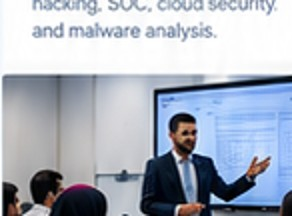

برامج الطلبة
بناء المواهب السيبرانية مبكرًا
مسار تعلّم متدرج من أساسيات تقنية المعلومات إلى الأمن السيبراني العملي المتقدم والمشاريع والخبرة في بيئة العمل.

تأسيسي
المهارات التقنية الأساسية
أنظمة تقنية المعلومات والبرمجة والشبكات والحوسبة السحابية وعلوم الحاسوب والذكاء الاصطناعي ومقدمة في الأمن السيبراني.
تطبيقي
الأمن السيبراني التطبيقي
الاختراق الأخلاقي العملي والاستخبارات مفتوحة المصدر (OSINT) وتطوير الويب والبرمجة المتقدمة وممارسات أمن الويب.
متقدم
الممارسة المتقدمة
مركز العمليات الأمنية وأمن السحابة والأجهزة المحمولة وتحليل البرمجيات الخبيثة وإدارة الحوادث ومشاريع التخرج والتدريب على رأس العمل.
مخرجات التعلّم
ما يكتسبه المتعلمون
- تحديد المخاطر السيبرانية وتحليلها
- تقييم ثغرات الشبكات والويب
- تطبيق أساليب الاختراق الأخلاقي بمسؤولية
- مراقبة الحوادث والاستجابة لها
- تحليل البرمجيات الخبيثة والسلوك المشبوه
- مراعاة الأخلاقيات والخصوصية والأدلة
- عرض النتائج التقنية وتوصيلها
- تنفيذ مشاريع تطبيقية ومهام في بيئة العمل